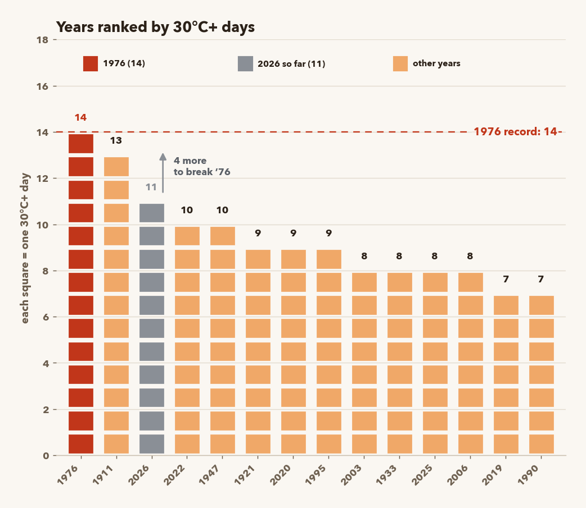
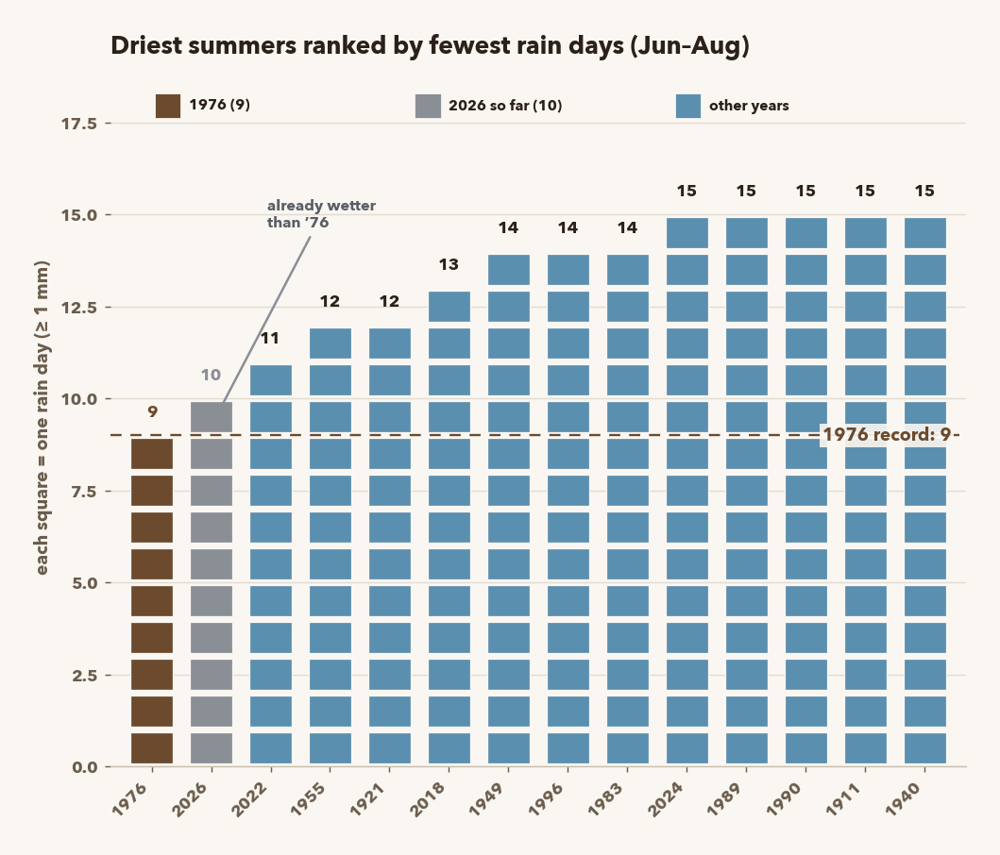
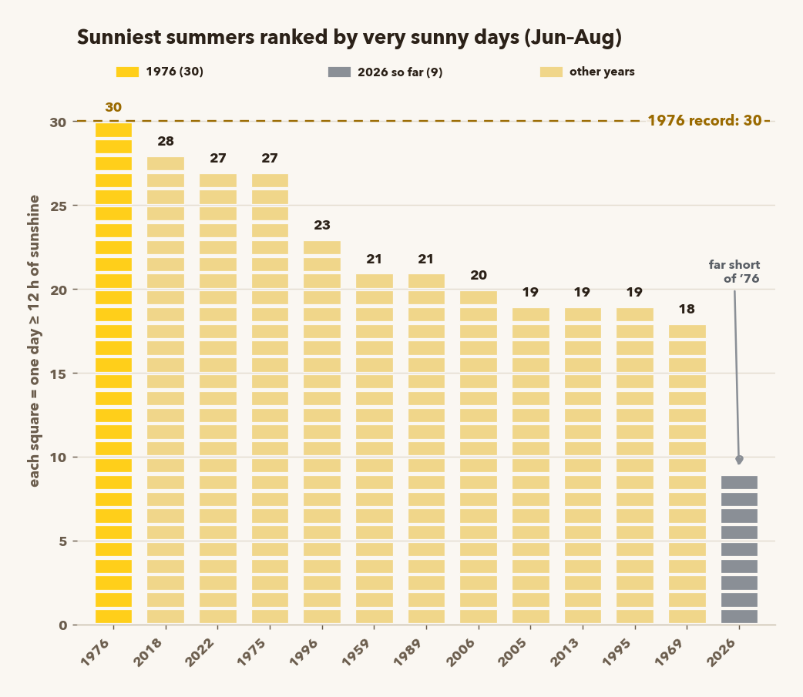
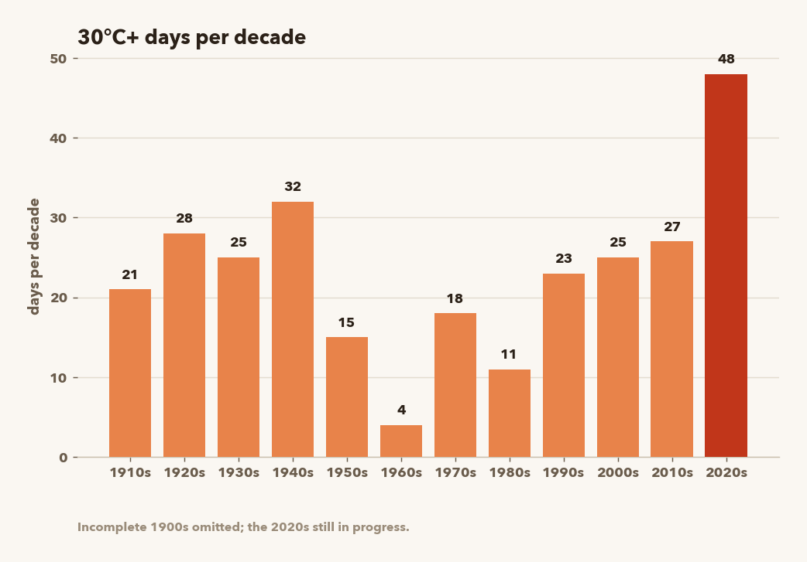
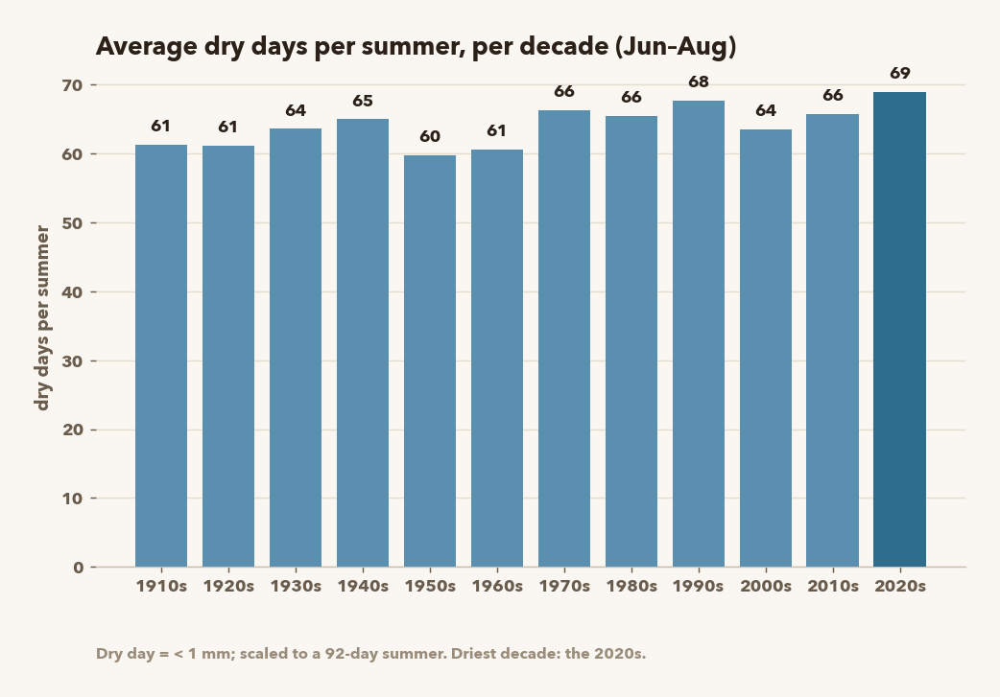
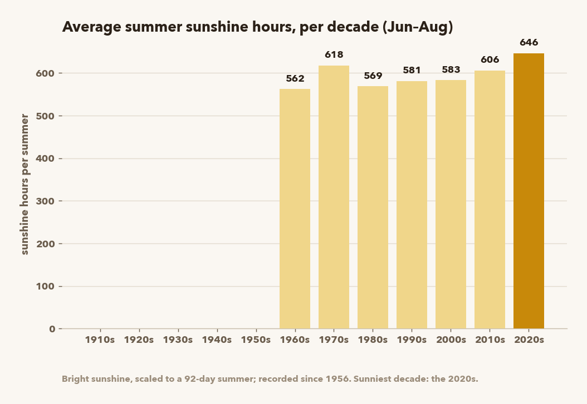

The six panels
Each ranks 2026 against the iconic summer of 1976 — hot (30°C+ days), dry (rain days), and sunny (bright-sunshine days) — with the decade-by-decade trend beneath each.

Years ranked by 30°C+ days
Driest summers ranked by fewest rain days
Sunniest summers ranked by very sunny days
30°C+ days per decade
Average dry days per summer, per decade
Average summer sunshine hours, per decadeDownloads
Want to save one of these, or use it in a slide or report? Pick a version from the list below and click Download — it saves as a PNG image straight to your device (on a phone, it usually lands in Photos/Downloads). "Full comparison" is all six panels together as one image; the rest are each panel on its own, cropped tight with no title banner.